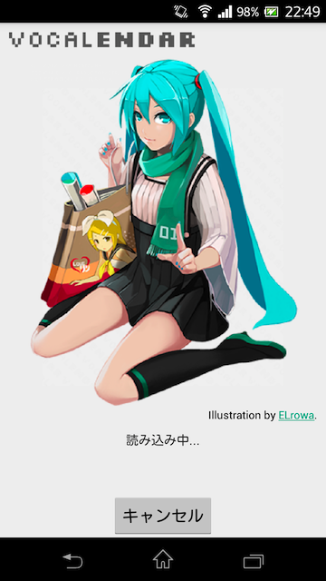
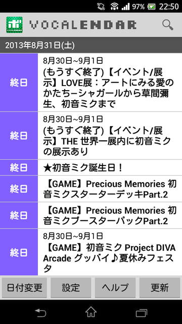
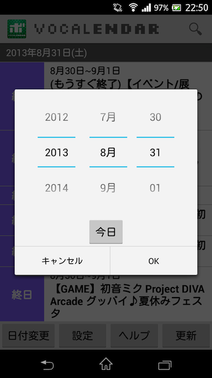
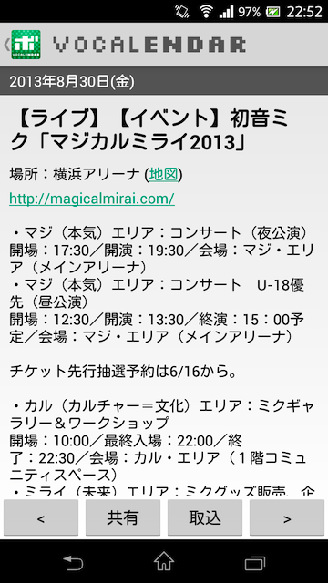

VOCALENDAR for Android
VOCALENDAR for Android について
VOCALENDAR(ボカレンダー) for Androidは、
ボーカロイド関連イベントの予定日を集めたカレンダー
VOCALENDAR（ボカレンダー）
公式のAndroidアプリです。
このアプリを起動すると、VOCALENDARに掲載された
ボーカロイド関連イベントを確認することができます。
以下のような機能があります。
- 今日を含めた3日間（設定で変更可能）のイベントの一覧を確認
- イベントの詳細を確認
- 指定した日付のイベントの確認
- イベントをキーワードで検索
- イベントの共有（メールやTwitterなどで送る）
- イベントの取り込み（自分のカレンダーに登録）
画面の説明
VOCALENDAR for Androidを起動すると、
VOCALENDARに掲載されているイベント情報を読み込みます。

読み込みが終わると、今日を含めた3日間のイベント一覧が表示されます。
表示する日数は設定で変更できます。

イベントを表示する日付を変えたいときは「日付変更」ボタンを押します。
日付選択ダイアログで、表示させたい日付を選択して「OK」ボタンを押します。

イベントの詳細を確認するには、イベントをタップします。
タップしたイベントの詳細が表示されます。

「<」ボタンと「>」ボタンを押すと、前後のイベントの詳細を
表示できます。スワイプ操作でも前後のイベントを表示できます。
イベントの詳細を表示している時に「共有」ボタンを押すと、
イベントの名前やイベント詳細へのURLを他のアプリに送って、
イベント情報を他の人と共有できます。
例えば、Twitterアプリに送ればイベント情報をツイートできます。
メールアプリに送れば、イベント情報をメールできます。
「取込」ボタンを押すと、イベント情報を自分のカレンダー（予定）に
取り込むことができます。
イベントの詳細表示からイベント一覧に戻るには、
戻るボタン（ホームボタンの横にあるボタン）を押します。
または、画面左上のアプリアイコンを押します。